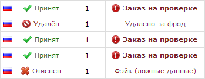
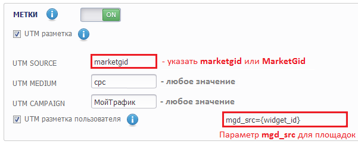

FAQ: частые вопросы о сервисе MyCPA
Общие вопросы
- Есть ли в системе реферальная программа?
- Поддерживает ли Ваш сервис API-интерфейс?
- Мне хотелось бы видеть в Вашей системе функцию ...
Вопросы вебмастера
- Как мне начать лить трафик?
- Какие есть лендинги для %offername% и какой самый лучший?
- Каким образом формируется ссылка потока?
- Как настроить PostBack-запрос?
- Как осуществляется обзвон?
- Как осуществляются выплаты?
- Почему мне не выводят деньги?!
- Что значит подпись
Заказ на проверкев статистике по лидам? - MarketGid: сбор статистики по площадкам и баннерам
- Использование SubID
- Я хочу узнать имя / телефон / адрес заказчика
Вопросы поставщика
- Я хочу присоединиться к вам в роли поставщика!
- У меня уже есть интерфейс обработки заказов и он меня устраивает
Общие вопросы
Есть ли в системе реферальная программа?
Да, она доступна в разделе «Рефералы» интерфейса. Вы можете получать вознаграждение за привлечение новых вебмастеров в нашу партнёрскую программу. С каждого подтверждённого лида от привлечённых вебмастеров вам будет начисляться партнёрское вознаграждение. Сумма вознаграждения может варьироваться в зависимости от оффера. Точную сумму можно найти на странице «Офферы» в пункте «Реферальные отчисления».
Поддерживает ли Ваш сервис API-интерфейс?
Да, большинство функций нашего сервиса реализованы в качестве API. Подробнее с ними можно ознакомиться в соответствующем руководстве.
Мне хотелось бы видеть в Вашей системе функцию ...
Вам требуются нестандартные или новые функции в системе? Новые инструменты анализа? У Вас есть идеи? Пишите нам в раздел технической поддержки - мы реализуем Ваши идеи!
Вопросы вебмастера
Как мне начать лить трафик?
Чтобы начать лить трафик, необходимо получить ссылку потока. Для этого требуется выполнить следующие действия:
- В разделе «Офферы» подобрать требуемый оффер для работы.
- С помощью кнопки «Создать поток по офферу» добавить новый поток для данного оффера. Имя потока может быть выбрано произвольно.
- В разделе «Потоки» нажать кнопку «Сгенерировать ссылку потока» соответствующего оффера или кнопку «Ссылка» требуемого потока для открытия формы генерации ссылки.
- В открывшейся форме выбрать понравившийся лендинг и, при необходимости, прокладку, и использовать полученную ссылку потока.

С доступными лэндингами и прокладками можно ознакомиться на странице каждого из офферов в соответствующем разделе.
Какие есть лендинги для %offername% и какой самый лучший?
Полный список рекламных материалов (лэндингов и прокладок) по каждому из офферов можно просмотреть на его странице. Для этого в разделе «Офферы» нужно открыть заинтересовавший вас оффер, щелкнув по его картинке или названию.
Кроме самого списка сайтов представлены также рейтинги CR и EPC для каждого из сайтов. Самым лучшим является сайт с наивысшим EPC. Данные характеристики по сайтам предоставляются только для ознакомления и являются экспериментальными. Для новых сайтов они могут "плавать".
Каким образом формируется ссылка потока?
Ссылка потока может формироваться тремя способами:
- Ссылка напрямую на лэндинг
-
В ссылке указывается только номер потока:
http://landing.com/?{flow}, например:/?13. Для увеличения конверта может быть использован comebacker-скрипт, для этого в конце ссылки необходимо добавить параметрcbбез значения, например:/?13&cb. Некоторые рекламные сети искажают ссылки при передаче. Чтобы избежать этого, параметр потока можно задавать явно, с помощью переменнойflow, например:/?flow=13. - Ссылка на лэндинг через прокладку
-
В ссылке может указываться не только номер потока, но и желаемый лэндинг:
http://prelands.com/prelanding/?{flow}-{land}, например:/prelanding/?13-7. Если номер лэндинга не указан явно, будет использован лендинг по умолчанию. Для увеличения конверта может быть использован comebacker-скрипт, для этого в конце ссылки необходимо добавить параметрcbбез значения, например:/prelanding/?13-7&cb. Некоторые рекламные сети искажают ссылки при передаче. Чтобы избежать этого, параметр потока можно задавать явно, с помощью переменнойflow, например:/prelanding/?flow=13-7или/prelanding/?flow=13&land=7. - Ссылка через редирект-домен
-
В ссылке указывается только идентификатор потока, например:
http://to.work.cpa/go123. Любой домен, припаркованный кwork.cpa, может быть использован как редирект-домен. Ссылки с трафбеком всегда используют редирект-домен.
Как настроить PostBack-запрос?
Вы можете получать обновления статуса заказа без использования API. Все обновления в реальном времени могут направляться Вам с помощью PostBack-запроса.
URL для PostBack-запроса задаётся в настройках каждого из потоков.
В POST-части запроса передаются все параметры из списка ниже. В GET-части запроса Вы можете использовать коды из таблицы для составления URL.
Например: http://mydomain.ru/status.php?id={id}&flow={flow}&status={status}&reason={reason}
| GET-код | POST | Описание |
|---|---|---|
{id} |
id |
Идентификатор заказа |
{offer} |
offer |
Идентификатор оффера. Список доступных ID офферов можно узнать с помощью функции offers. |
{flow} |
flow |
Идентификатор потока. Список доступных ID потоков можно узнать с помощью функции flows. |
{site} |
site |
Идентификатор сайта-лендинга. Список доступных ID сайтов можно узнать с помощью функции sites. |
{space} |
space |
Идентификатор сайта-прокладки. Список доступных ID сайтов можно узнать с помощью функции sites. |
{target} |
target |
Идентификатор цели. |
{status} |
status |
Статус заказа. Список статусов аналогичен описанному для функции lead. |
{reason} |
reason |
Причина отказа. Список причин отказа аналогичен описанному для функции lead. |
{price} |
price |
Общая стоимость заказа. |
{count} |
count |
Количество товаров в заказе. |
{utmi} |
utmi |
Идентификатор источника перехода:
|
{utms} |
utms |
Идентификатор источника перехода (баннера) или свой SubID |
{utmc} |
utmc |
Идентификатор кампании или свой SubCmp |
Как осуществляется обзвон?
Поставщики занимаются обзвоном клиентов с 10:00 до 22:00 по московскому времени ежедневно. В среднем, первый звонок покупателю поступает в течение часа с момента появления заказа. Возможны перерывы в обзвоне в праздничные дни (Новый год, 8 марта, 1 и 9 мая, 12 июня, 4 ноября).
Заказы в статусе «Недозвон» обрабатываются в течение недели с момента поступления. В случае, если за этот срок дозвониться до покупателя не удалось, лид удаляется.
Внимание! Количество звонков, указанное в статистике по лидам, носит справочный характер и не является точным! Реальное количество звонков может быть больше или равно указанному. По некоторым офферам статистика количества звонков не отображается по техническим причинам.
Как осуществляются выплаты?
Выплаты осуществляются в рабочие дни. Срок выплаты - 5-7 рабочих (банковских) дней с момента получения запроса. В случае большого количества выплат в системе возможны задержки до 2 недель.
Минимальная сумма выплаты - 2000 рублей. Вывод средств осуществляется на WebMoney WMR-кошельки.
Холд первой выплаты - 1 неделя. В случае наличия подозрительных заказов выплаты могут быть задержаны.
Почему мне не выводят деньги?!
Прежде всего, перечитайте ещё раз вопрос о сроках выплат.
Если по срокам выплаты уже обязаны были пройти: загляните в раздел «Статистика по лидам» и проверьте, нет ли у какого-либо лида подписи «Заказ на проверке».
Если сроки превышены и заказов на проверке нет, смело пишите в техподдержку!
Что значит подпись Заказ на проверке в статистике по лидам?
При просмотре раздела «Статистика по лидам», вы можете заметить у некоторых не отклонённых лидов подпись «Заказ на проверке». Выглядит это как на рисунке ниже.

Данная надпись означает, что лид попал под проверку трафика из-за подозрений во фроде. Выплата по данному лиду будет задержана до момента доставки товара получателю и оплаты им товара. Проверка заказов на фрод производится как в автоматическом, так и в ручном режиме. Подозрительные заказы в дальнейшем контролируются службой безопасности в индивидуальном порядке.
В том случае, когда на добрую сотню ваших лидов попался один такой заказ, не отчаивайтесь - он ни коим образом не повлияет на вывод средств. Все выплаты будут осуществляться в срок.
Важно: если подозрительных лидов от вас поступило слишком много, все выплаты блокируются до доставки заказов получателям. В такой ситуации пользователь может быть позднее заблокирован за фрод с полной отменой всех заказов.
MarketGid: сбор статистики по площадкам и баннерам
Наша система позволяет собирать статистику по площадкам и баннерам с MarketGid в автоматическом режиме и помогает в формировании чёрных списков площадок. Для начала работы со статистической информацией требуется настроить рекламные кампании в MarketGid, как показано на рисунке.

Настраивать отдельно требуется каждую кампанию. В настройках кампании включите метки, добавьте стандартную UTM-разметку и активируйте пользовательскую UTM-разметку. В стандартной UTM-разметке в качестве параметра utm_source должен быть указан marketgid, остальные параметры могут быть любыми (кроме пустых). В пользовательских метках добавьте строку mgd_src={widget_id} для сбора статистики о площадках.
Использование SubID
Наша система позволяет собирать статистику по рекламным кампаниям и баннерам с большинства рекламных сетей в автоматическом режиме, но вы можете использовать свои собственные идентификаторы для баннеров и рекламных кампаний. Для этого используйте параметры subid и subcmp в своей ссылке потока. Параметры subid и subcmp могут принимать только положительные целочисленные значения.
Например: http://my-landing.net/?flow=123&subid=112233&subсmp=432
Я хочу узнать имя / телефон / адрес заказчика
Информация об имени, телефоне и адресе заказчика является конфиденциальной и не разглашается ни при каких обстоятельствах. Аналогично вебмастер не может узнать состав заказа, количество заказанных товаров того или иного типа, сумму заказа.
По каждому лиду веб-мастеру доступна следующая информация: товар (оффер), дата и время поступления, текущий статус, источник заказа (IP, лэндинг, прокладка), для некоторых офферов - количество звонков и причина отказа.
Вопросы поставщика
Я хочу присоединиться к вам в роли поставщика!
Чтобы присоединиться к нашему проекту в роли поставщика, свяжитесь с нами по почте trade@work.cpa. Мы обсудим детали работы вашей компании и подготовим необходимые инструменты для начала работы.
У меня уже есть интерфейс обработки заказов и он меня устраивает
Мы можем передавать все заказы, поступающие к нам, в ваш интерфейс с помощью удобных вам инструментов или наших API. Детали интеграции специалисты нашего технического отдела могут обсудить с вами по почте trade@work.cpa.